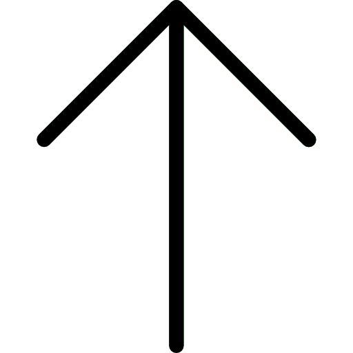

<div ngxUiLoaderBlurred blur="5">
    <app-header></app-header>
    <router-outlet></router-outlet>
    <app-footer></app-footer>
</div>
<ngx-ui-loader></ngx-ui-loader>
<a *ngIf="showGoUp" (click)="scrollTop()" class="back-to-top">
    
</a>